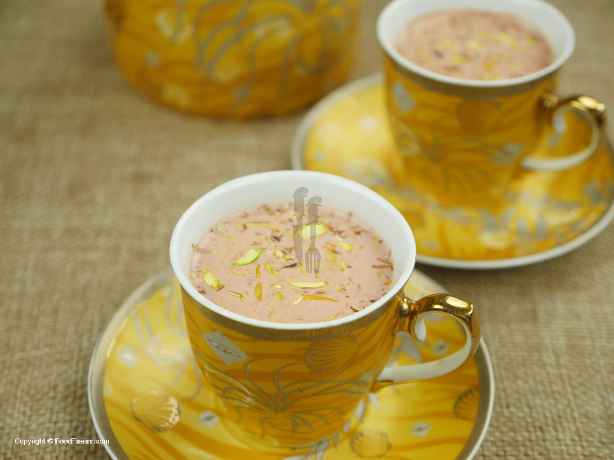
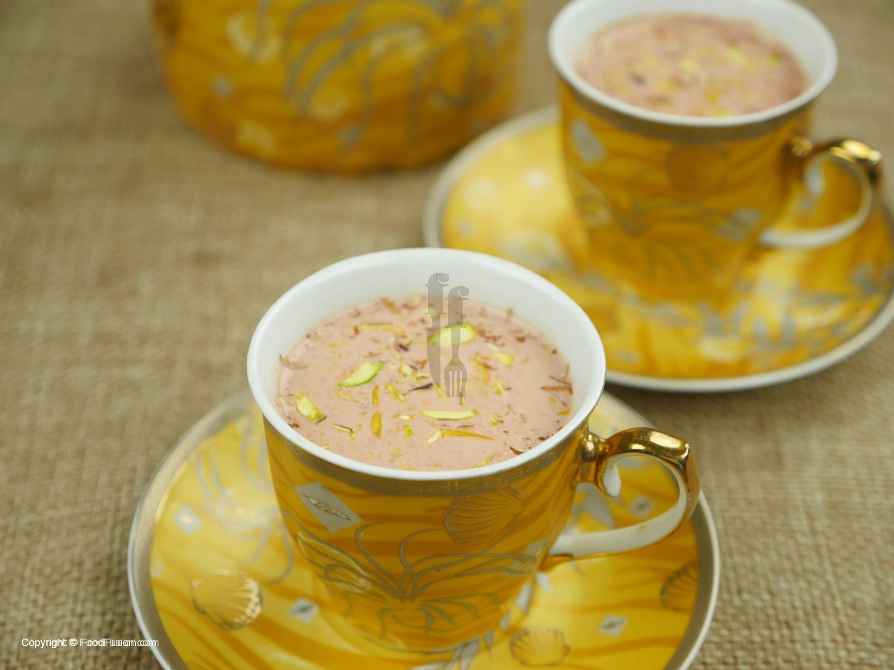

Here is my recipe for Kashmiri Tea:
 

In kettle, add water,kashimiri tea leaves,star anise,cloves,cardamom seeds,salt and baking soda,bring it to boil. Let it simmer for 20-30 minutes until it reduces to half. Add chilled water and mix well for 8 to 10 minutes and cook for 5 minutes. Strain and set aside, kehwa is ready and can be refrigerated for up to 4-5 days. For Kashmiri tea,in kettle,add milk,almonds(crushed),pistachio(crushed),sugar (optional)and give it a good mix. Add kehwa and cook for few minutes. Finally pour the tea in cups,add almonds(crushed) and pistachio(crushed). Kashmiri tea is ready.
In kettle, add water,kashimiri tea leaves,star anise,cloves,cardamom seeds,salt and baking soda,bring it to boil. Let it simmer for 20-30 minutes until it reduces to half. Add chilled water and mix well for 8 to 10 minutes and cook for 5 minutes. Strain and set aside, kehwa is ready and can be refrigerated for up to 4-5 days. For Kashmiri tea,in kettle,add milk,almonds(crushed),pistachio(crushed),sugar (optional)and give it a good mix. Add kehwa and cook for few minutes. Finally pour the tea in cups,add almonds(crushed) and pistachio(crushed). Kashmiri tea is ready.
| Calories | Protein | Carbohydrates | Fat |
|---|---|---|---|
| 100 | 10 | 20 | 30 |
Quoted
Code
Made with reference to Food Fusion